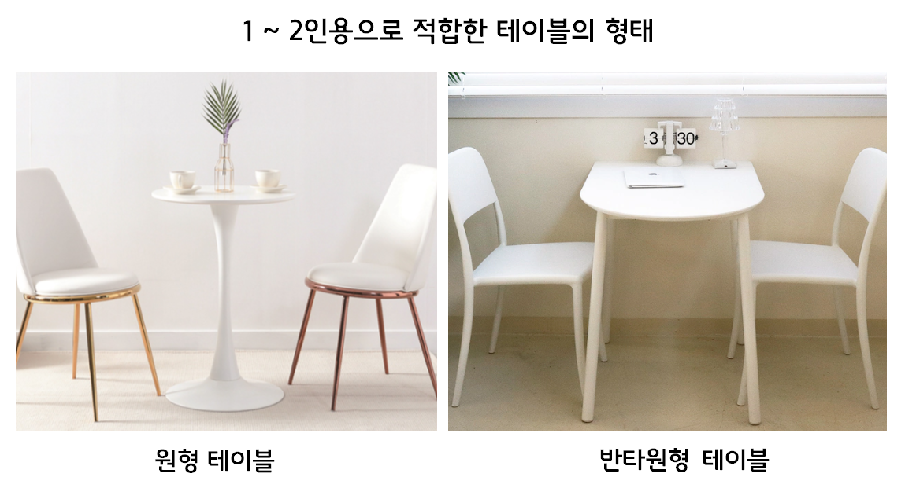

- 에어비앤비 인테리어 - 이론편
- 인테리어 기본 Tip5
- 컬러 선정
- 에어비앤비 인테리어 - 실전편
- 침대
- 협탁
- 테이블
에어비앤비 인테리어 - 실전편
숙소에 없어서는 안 될 품목에는 어떤 것들이 있을까요?
셀프 인테리어 시 반드시 필요한 가구 3가지를 선정 및 구매 꿀팁을 기재해두었으니, 구매시 참고하여 실패없는 소비하시기바랍니다.
3.테이블
방에 들어섰는데 침대 밖에 없다면 그 공간은 ‘잠 만자는 공간’될 것입니다.
하지만 우리는 숙소에서 잠만 자진 않습니다. 업무도 하고, 식사도 하고···
이렇게 다용도로 활용 가능한 테이블을 고르기위해서는 구매 시 '형태와 사이즈'에 유의해야합니다.
또한 공간의 활용에 따라 ‘테이블&의자’를 놓느냐, ‘소파&쇼파테이블’을 놓느냐에 따라 그 분위기가 많이 달라지므로,
무엇을 선택할지 고민이 되는 분들은 아래의 팁을 참고하시기 바립니다.

- 소파 vs 의자
개방형원룸을 기준으로 침대와 협탁을 이미 배치했다 가정했을때
나머지 공간(거실영역)에 앉을 수 있는 가구를 놓고 싶다면 '활용가능한 공간'이 어느정도인지 살펴보아야합니다.
만약 이 공간이 꽤 넓다면 과감하게 '소파(2인)'를 선택하셔도 좋습니다.
소파의 경우 부피감이 있긴하지만 패브릭과 쿠션소재를 사용하기때문에 아늑한 분위기를 선사합니다. 무엇보다 높이가 낮고 편안해서 티비 시청시 더할 나위없이 좋은 가구이죠.
반면 업무용 공간을 지향하며, 좁은 나머지 공간을 활용하고 싶다면 '의자'를 선택하는 것이 효과적입니다.
- 테이블의 형태
좌석을 선택했다면 그와 어울리는 테이블을 골라야합니다.
소파의 경우 소파테이블을 구매해야하는데, 시중에 흔히 나오는 소파테이블의 형태인 직사각형 혹은 타원형을 추천합니다.
사이즈는 2인기준으로 '1000~1200mm'정도가 적당합니다.
테이블의 경우 2인수용 기준으로 가장 무난한 형태인 원형 혹은 반타원형을 추천합니다.
특히 반타원형은 벽에 붙여 사용할 수 있기 때문에 좁은 공간의 공간활용에 탁월합니다.
사이즈는 2인기준으로 원형은 '600~800mm', 반타원형은 '800~ 1200mm'가 좋습니다.
- 어울리는 소재
위의 그림을 보셨다면 한 가지 눈치채셨을겁니다. 바로 소파와 소파테이블, 그리고 의자와 테이블의 조합이 이질감없이 잘 어울린다는 것을요.
세트로 출시된 상품도 아닌데 잘 어울리는 이유가 뭘까요?
그 이유는 소재와 컬러를 고려하여 제품을 골랐기때문입니다.
바늘 가는 데 실 가는 것처럼 소파와 소파테이블, 테이블과 의자는 단짝친구와 다름없기에 그 조화가 중요합니다.
테이블의 주요 컬러가 화이트~내추럴(밝은색), 주요 소재가 원목 혹은 포세린(대리석)일때, 의자는 화이트 컬러의 원목 혹은 철재(스틸)를 사용한 가벼운느낌의 제품을 선택하시는게 좋습니다.
소파의 경우 컬러가 화이트~아이보리인 기본컬러를 구매하면 어느 공간이든간에 무난하게 잘 어울립니다.
소재는 시중에 주로 판매되고 있는 중저가제품의 주요 소재가 아쿠아텍스(방수패브릭)이기에
유리+스틸로 이루어진 소파테이블과 매치해도 그렇게 차가운느낌이 들지않고 잘 어울립니다.
(만약 코지한 분위기를 연출하고 싶다면 따듯한 느낌의 우드 프레임의 소파를 선택하는 것도 좋은 방법입니다.)